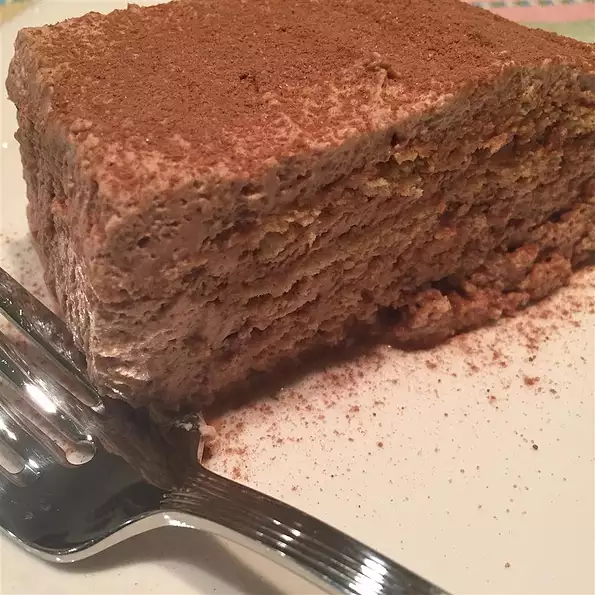

Poor Woman's Tiramisu

I was craving coffee and chocolate one night and came up with this yummy version using graham crackers. Drizzle
chocolate syrup over individual slices, if you like, for extra chocolate flavor.
Ingredients
Cream Layers:
- 1 cup heavy whipping cream
- ½ cup confectioners' sugar
- 2 tablespoons chocolate milk powder
- 1 ½ teaspoons instant espresso powder
Cookie Layers:
- ½ cup brewed coffee
- 1 individual package graham crackers
Steps
- Beat heavy whipping cream with an electric mixer in a chilled bowl until soft peaks form. Beat
confectioners'
sugar, chocolate milk powder, and espresso powder into the whipped cream until the color is consistent and you
again have soft peaks.
- Heat a large skillet over medium-high heat. Cook and stir beef in the hot skillet until browned and crumbly,
5
to 7 minutes; drain and discard grease. Season beef with Greek seasoning, salt, and pepper.
- Pour coffee into a wide, shallow bowl. Dip graham crackers briefly in the coffee and layer into the bottom
of
a loaf
pan in a single layer to cover the bottom. Spread about 1/4 of the whipping cream mixture over the crackers.
Repeat
layering with remaining ingredients to get four layers each of the cream and the cookies.
- Cover loaf pan with plastic wrap and refrigerate until chilled, at least 2 hours.